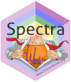
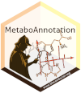
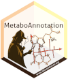

 

Tutorials and workshops describing and explaining the infrastructure for mass spectrometry (MS) data analysis centered around Bioconductor’s Spectra package.
These Workshops are also given (either in-person or virtually) at various conferences. If available, recordings of these are linked below in the respective workshop section.
See NEWS.md for information on the current version and a change log.
Installation
For on-line code evaluation the workshops can also be run using a self-contained docker image with all R packages and a server version of RStudio (Posit) pre-installed. The current docker container bases (and includes) the official docker container for Bioconductor release 3.19. As an alternative, rendered versions of all workshops are available at SpectraTutorials (navigate to the Articles drop-down menu and select the workshop of interest).
For installation:
Get the docker image of this tutorial with
docker pull jorainer/spectra_tutorials:RELEASE_3_19.-
Start docker using
docker run \ -e PASSWORD=bioc \ -p 8787:8787 \ jorainer/spectra_tutorials:RELEASE_3_19 Enter
http://localhost:8787in a web browser and log in with usernamerstudioand passwordbioc.In the RStudio server version: open any of the R-markdown (.Rmd) files in the vignettes folder and evaluate the R code blocks.
Workshops/Tutorials
Seamless Integration of Mass Spectrometry Data from Different Sources
Short description
In this workshop we will use Spectra to:
- import MS data from mzML files,
- select MS2 spectra for a certain compound,
- compare and match the MS2 spectra against reference MS2 spectra from a public database,
- annotate the spectra and export them to a file in MGF format.
Description
This (instructor-led live demo) workshop explains the Spectra package and shows how this new infrastructure can be used to represent and analyze Mass Spectrometry (MS) data. The use of different data type and format specific backends guarantees an easy expandability of the infrastructure. This is illustrated in this tutorial on a simple use case, in which MS/MS (a.k.a. MS2) spectra, measured by an MS instrument, are compared and matched against a public spectral database containing public domain reference MS2 spectra.
The video recording of this workshop at the BioC2021 conference is available here.
The video recording of this workshop at the EuroBioc2020 conference is available here.
Workshop goals and objectives
Pre-requisites
- Basic familiarity with R and Bioconductor.
- Basic understanding of Mass Spectrometry (MS) data.
Spectra: an expandable infrastructure to handle mass spectrometry data
Short description
- Explain different representations of mass spectrometry data along with their properties and advantages.
- Explain the caching and lazy processing queue of the Spectra package.
Description
The Spectra package provides a modern infrastructure for MS data handling specifically designed to enable extension to additional data resources or alternative data representations. These can be realized by extending the virtual MsBackend class and its related methods. Implementations of such MsBackend classes can be tailored for specific needs, such as low memory footprint, fast processing, remote data access, or also support for specific additional data types or variables. Importantly, data processing of Spectra objects is independent of the backend in use due to a lazy evaluation mechanism that caches data manipulations internally.
This workshop discusses different available data representations for MS data along with their properties, advantages and performances. In addition, Spectra’s concept of lazy evaluation for data manipulations is presented, as well as a simple caching mechanism for data modifications. Finally, it explains how new MsBackend instances can be implemented and tested to ensure compliance.
Pre-requisites
- Basic familiarity with R and Bioconductor.
- Basic understanding of Mass Spectrometry (MS) data.
Workshop goals and objectives
This is a more technical demonstration of the internals of the Spectra package and design of its MS infrastructure. We’re not demonstrating any use cases or analysis workflows here.
MS/MS Spectra Matching with the MetaboAnnotation Package
The Spectra package provides all the functionality required for annotation and identification workflows for untargeted LC-MS/MS data, but, while being very flexible and customizable, it might be too cumbersome for beginners or analysts not accustomed with R. To fill this gap we developed the MetaboAnnotation package that builds upon Spectra and provides functions for annotation of LC-MS and LC-MS/MS data sets tailored towards the less experienced R user.
This tutorial shows how MetaboAnnotation can be used in R-based LC-MS/MS annotation workflows.
Note that there is also an additional tutorial for the MetaboAnnotation, CompoundDb and MetaboCoreUtils packages available: MetaboAnnotationTutorials.
Contribution
For contributions, see the RforMassSpectrometry contributions guideline.
Code of Conduct
See the RforMassSpectrometry Code of Conduct.
Acknowledgments
Thank you to Philippine Louail for fixing typos and suggesting improvements in the Spectra: an expandable infrastructure to handle mass spectrometry data.